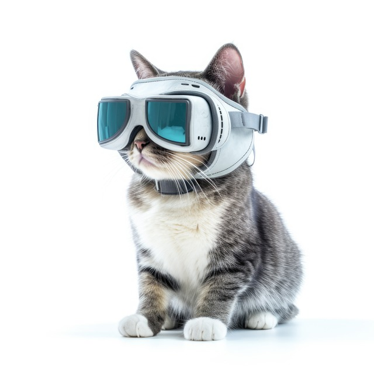
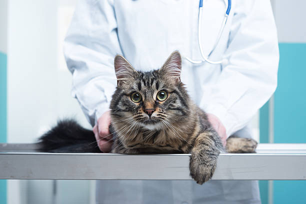
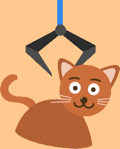

Funny Website/ Games for Felines Lovers

1. Catgpt
Introducing GPT-Furr, Cat-GPT’s meowst sassy, all-knowing system
2. Cats Mini Games
Great for animal lovers and feline owners.
Even if you do not have a kitty as a pet,
you will love their wide selection of adventures.
3. Meow Playground
You can use a cat character to connect with other players, make friends, and play together,
aiming to become the most popular pet in town.
Additionally, there is a browser extension available.
Cats Knowledge
4. The Cat Site
Consult other cat lovers about any behavioral problems,
share your knowledge and experience
or just come and learn about the mysteries of feline behavior.
5. Cats.com
Provide information about these lovely creatures!
Highly recommended for all cat lovers.
Whether you own a cat or are considering adopting one.
This website is truly useful for you.
Cats Health Care
6. 24-Hour animal hospitals and clinics in Hong Kong
List of 24-Hour Hong Kong animal hospitals, save your cute friends in emergencies.

7. VSH Hong Kong
Provides a wide range of specialized veterinary medicine and services.
Good reputation among pets lovers. Highly recommended for all cats and pets owners.
8. CityU vmc
One of the largest veterinary centre in Southeast Asia.
Also provide specialized veterinary medicine and services.

CATs Adoption
*Please carefully consider the responsibilities before deciding to adopt!!!
9. SCPA
Provide shelter and care for animals in need, promote responsible pet ownership,
and advocate for animal rights and protection
10. Society for Abandoned Animals (SAA)
Aim to rehome abandoned animals
Pay visits to the needy ones (e.g. the elderly, emotionally disturbed)
To promote animal welfare in the community by organising educational events